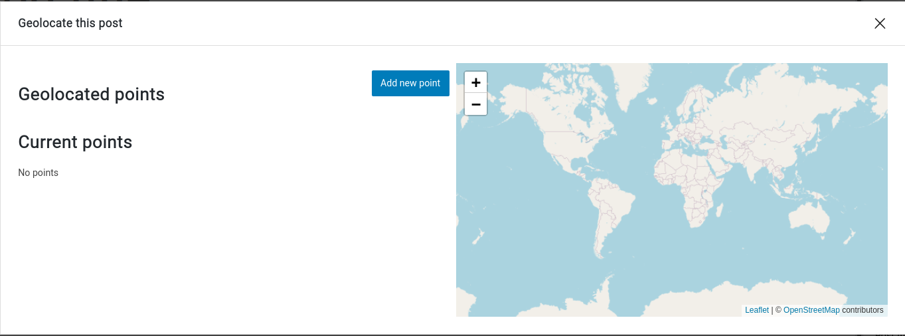
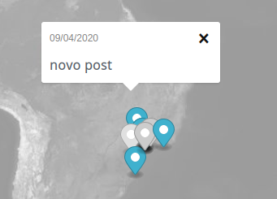

Geolocating posts
When editing a post, JEO will add an extra panel to the sidebar: Geolocation. Clicking on Geolocate this post, a popup will then be displayed.

New points can be added to the post by clicking on Add new point button. You can search for a specific location in the search bar.
It's also possible to choose the relevance of each point, which is useful when you have more than one point.
Visualizing a map with geolocated posts
Map with geolocated posts contain markers on the localization of each post. Clicking on them will open a popup with its title and publication date. Clicking on the title will take you to the post itself.
